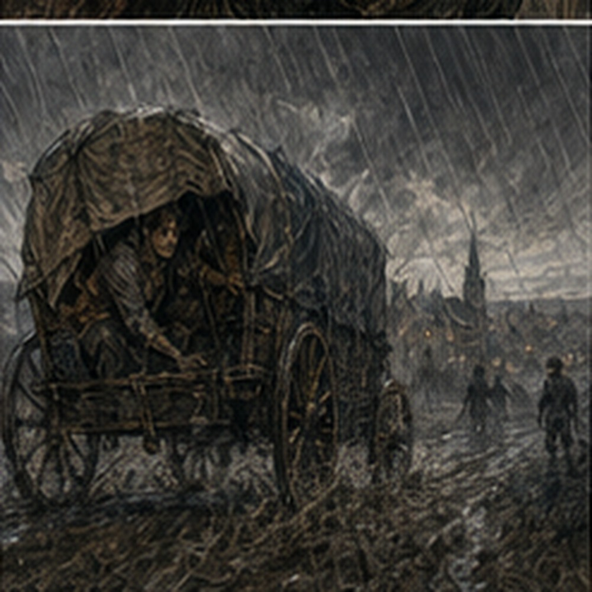
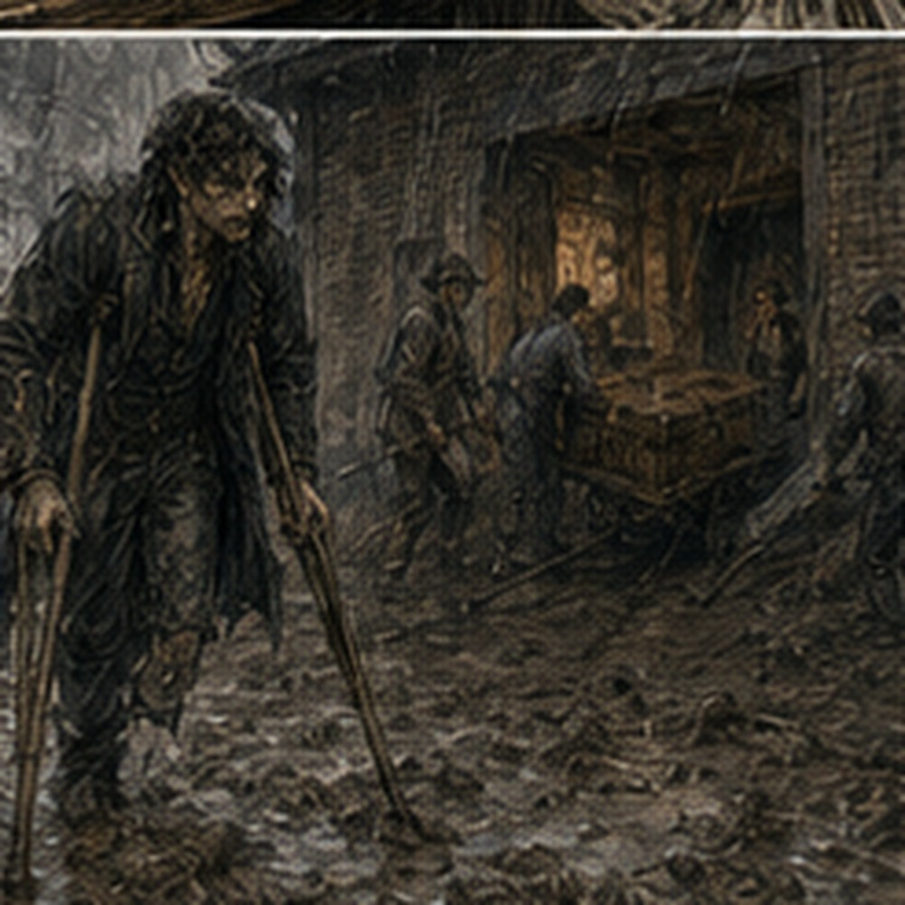
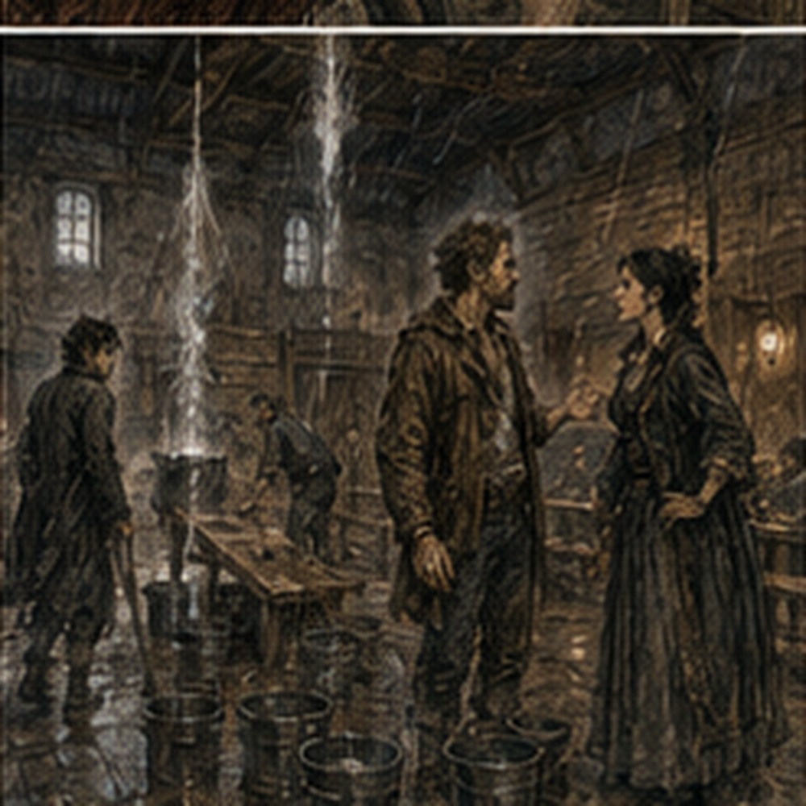
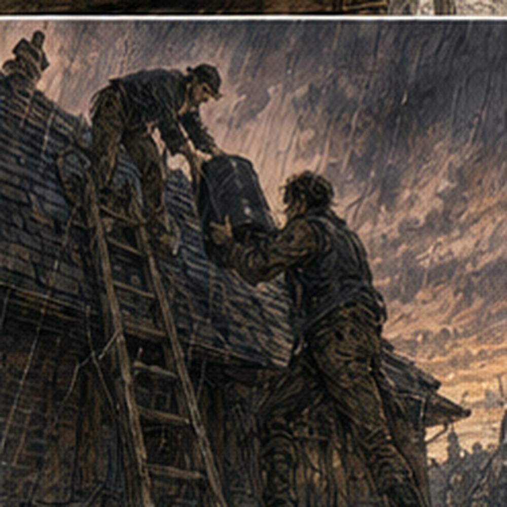

The rain improved. By improved, I mean it stopped hitting me in the face. It continued hitting everything else. We came over the ridge near evening with the wagon wheels cutting dark lines through the road and water running in the ditches on both sides. The northern country opened below us in wet fields, low walls, and trees bent by wind. Somewhere beyond them sat the town. Marek woke. He looked at the sky.
"No."
Then he went back to sleep. Serra had eaten the apple. I had seen none of it happen. The core was in her hand.
"You could have given me some."
"You were thinking."
"That does not prevent eating."
"It should."

She threw the core into the ditch. The wagon dropped into a rut. My shoulder hit the side again. Drell had been right about the road. I disliked him more for every mile. I had decided not to think about Lucan Drell.
This remained a poor decision because deciding not to think about someone required checking periodically whether I was thinking about him. I made it almost ten minutes once. Then Marek woke again.
"Strange man."
"Go to sleep."
"I was."
"You failed."
He rubbed his face. "Did Teren tell you anything?"
"No."
"Good. Me neither."
"That is not good."
"It means I remain important."
"How?"
"He withholds information from important people."
"He withholds information from everyone."
Marek considered.
"I am extremely important."
I looked out at the rain. The town appeared through it gradually. First a church tower. Then smoke. Then roofs. Mostly dark tile, some thatch at the edges, chimneys sending smoke sideways in the wind. One roof near the center had a blue tarp stretched over part of it. I stared. Serra followed my eyes.
"No."
"I didn't say anything."
"You leaned."
"I am sitting."
"You leaned while sitting."
"My face and my body are both apparently treacherous."
"Yes."
The road narrowed between houses. People had laid boards across the worst mud near doorways. Water came off roofs in sheets where gutters failed. A woman in an apron stood under an awning arguing with a man who had three chickens tucked inside his coat. The chickens looked dry. He did not. Our wagon stopped. Then started. Then stopped again. Davin shouted something to the other wagon. Someone shouted back. I could not hear either of them. Teren got down. That meant we were either here or in trouble.
Usually both. The hall stood at the end of a market street. It was not the building with the blue tarp. I felt betrayed. It was lower and wider, built of brick on a stone foundation, with a long roof sloping toward the street and three tall front windows. A covered entry projected from one side. The sign above the main doors had once been painted green. Water dripped from every edge. Two men were on the roof.
One of them was kneeling beside a ladder with a roll of something dark. The other held a bucket. Inside the front doors, another bucket caught water. Marek climbed down from the wagon. He looked at the bucket.
"Money?"
Teren turned.
"Not yet."
Marek looked genuinely wounded. A woman came through the doors carrying a second bucket. She was short, broad through the shoulders, with her sleeves rolled above both elbows despite the cold.
"You're late."
Teren looked at the rain. She looked at the rain.
"Fine," she said. "You're here."
"Teren."
"Bessa."
They shook hands. Bessa looked at the wagons.
"Keep the trunks under cover."
Nessa was already saying the same thing.
"Costumes first. Pell, no. That side. Rinna, where is the oilcloth?"
"In the wagon."
"Which?"
Rinna stared at her. Nessa closed her eyes.
"Fine."

The company exploded. I got down carefully. The mud was deep enough that my left crutch sank farther than expected. I nearly followed it. I did not. I pulled it free, found stone near the edge of the road, and moved toward the hall. Davin pointed at me.
"Door."
I knew doors. I held it. Costume trunk. Prop crate. Another trunk. Basket. Three rolled cloths. The long box came last. Davin and two local men carried it between them. Still closed. Still upright once they put it inside. Bessa looked at it.
"What is that?"
"Dry," Davin said.
She waited. He did not add anything.
"Does it need a room?"
"Yes."
"Everything needs a room."
"Dry room."
She looked at Teren. Teren said, "Later." Good. The old box had returned to being someone else's problem. I went inside. The hall smelled of wet brick, lamp oil, old wood, and the particular damp smell of a room that had been closed while rain happened above it. The main room was bigger than I expected.

Benches filled most of the floor. A low stage ran across the far end, perhaps three feet high, with shallow wings and a rear curtain hung from a timber frame. There was no proper fly space. No high scenery. No upper gallery. There were also seven buckets. I counted. Then found an eighth.
"Don't," Teren said behind me.
"I am counting buckets."
"That is the beginning."
"The beginning of what?"
He walked past. Bessa stood near the stage with another man. This one had gray hair tied at the back and wet knees on his trousers. He pointed upward.
"The beam is fine."
Bessa said, "The beam is wet."
"The beam has been wet before."
"That is not the defense you think it is."
Teren joined them.
"Stage?"
Bessa pointed. The left rear quarter of the stage was covered by a canvas sheet. Water had darkened it in several places. One bucket sat on top. Another sat behind the curtain.
"That's the worst," she said.
Teren climbed onto the stage. I stayed below. Mostly. He walked the dry section. Pressed his heel against two boards. Looked up.
"How long?"
The gray-haired man said, "Roof patch tonight if the wind drops."
"If it doesn't?"
"Morning."
"If it doesn't in the morning?"
The man shrugged. Bessa said, "It will." Teren looked at her. She corrected herself.
"It usually does."
Marek appeared beside me.
"Money?"
"You asked already."
"I am checking."
Teren heard him.
"If we can use the room."
"Can we?"
Teren pointed at the wet stage. Marek considered.
"Other half."
Bessa laughed. Teren did not.
"How many sold?"
"Forty-two already."
That changed Teren's face slightly. Not happiness. Arithmetic.
"Capacity?"
"Normally one twenty."
"With that side closed?"
Bessa looked at the benches.
"Ninety."
The gray-haired man said, "Hundred."
"Ninety," Bessa repeated.
"Hundred if they're friendly."
"They paid for a show, not marriage."
Marek said, "Ninety is money." Teren looked at him. Marek raised both hands.
"Professional contribution."
Teren turned back to Bessa.
"If the stage stays like this, we lose that entrance."
"Yes."
"And the rear cross."
"Yes."
"Curtain?"
"Can stay."
The gray-haired man said, "Probably." Teren looked up. The man sighed.
"Can stay."
"Dressing?"
"Two rooms behind. One leaks at the window, not the roof."
"Props?"
"Store room."
"Dry?"
Bessa looked toward Davin.
"Dry enough."
Davin, from across the room, said, "No." Everyone turned. He had already found the store room. Of course he had.
"Wet wall," he said.
Bessa said, "It doesn't leak."
"Wet."
"It's brick."
"Wet brick."
"That is what brick does in rain."
Davin looked at Teren.
"No."
Teren rubbed his face.
"Another room?"
Bessa pointed toward the side corridor.
"Office."
"Mine," said a voice from somewhere.
Bessa shouted back, "Not tomorrow." A man shouted, "Bessa!"
"Your desk can survive company."
"My papers cannot."
Davin said, "Box doesn't care about papers."
"Thank you," Teren said. "Useful."
I moved farther into the hall. The leak was not one leak. That became obvious quickly. Three buckets stood near the audience benches, but those drips were small and regular. The stage problem came from somewhere farther upslope. Water had traveled along something before appearing near the rear. I looked at the ceiling. Heavy rafters. Plaster between them in some sections. Exposed boards in others.
A dark line ran along one timber and disappeared behind the stage wall. Interesting. No. Not interesting. Work. I looked at the stage. The left entrance was unusable because the canvas and bucket occupied the path. The right entrance was dry. There was also a side door from the hall itself near the front benches. Audience entrance. Or actor entrance if necessary. Probably. I went closer. The gray-haired man climbed down from the stage.
"You with them?"
"Apparently."
He followed my eyes upward.
"Leak's not there."
"I didn't say it was."
"You're looking there."
"I was looking at the dark line."
"Old."
"Oh."
"Three years."
I looked again. He was right. The dark stain continued past the current wet area and had dust over part of it. Old. I had already been wrong. Good start.
"Current water comes from the west valley," he said. "Flashing lifted."
I looked at the roof from inside as if that would help. It did not.
"Can you fix it?"
"Yes."
"When?"
"When rain stops asking stupid questions."
Fair. He walked away. I liked him. Teren was now arguing about cancellation.
"If the stage is wet tomorrow, we don't perform."
Bessa said, "If you cancel tomorrow, I still have forty-two people who paid."
"You refund them."
"With what?"
"Their money."
"I used deposits."
Teren stared at her.
"For?"
"Hall."
"You own the hall."
"I manage the hall."
"Who owns it?"
"Three brothers."
"Where are they?"
"One dead. One south. One useless."
Marek whispered, "I like her." I said, "You like everyone who owes someone money."
"Shared values."
Teren said, "If we cannot perform because your roof leaks, I am not eating the loss." Bessa folded her arms.
"If you perform, you get your agreed share."
"If we cannot?"
"We move it."
"Where?"
She pointed toward the side wall.
"Assembly room."
The man in the office shouted, "No." Bessa shouted, "Not yours either." Teren looked toward the side corridor.
"How big?"
"Sixty standing."
"No."
"Seventy."
"You just said sixty."
"People get smaller when disappointed."
Marek nodded.
"True."
Teren ignored him. Bessa continued. "Or market shed."
"In rain?"
"Roof doesn't leak."
"Walls?"
"Two."
Teren closed his eyes. I started laughing. He opened them.
"Gregory."
"Sorry."
"You aren't."
"No."
He pointed toward the stage.
"Go see whether you can get from right wing to the house door without crossing the wet boards."
That was work. I went. The stage steps were at the right. I climbed them. The boards were worn smooth near center. My crutch tips held, but I tested before committing weight. Right wing. Dry. Rear path behind curtain. Mostly dry until the canvas began. Blocked. I came back.
The house-side door was below stage level, so using it meant coming down the right steps, crossing behind the front bench, and entering through the audience. Possible. Awkward. I tried it. Teren watched from the floor.
"Again."
I did it again. Not rehearsal. Geometry. The second time I caught my crutch on the edge of the front bench.
"Move bench," Teren said.
Bessa said, "That costs seats."
"One seat."
"Two if people don't want a crutch in their teeth."
"Move two."
Bessa looked at the forty-two imaginary coins already in her head.
"Fine."
Two local workers shifted the bench. That was it. Teren walked away. No scene. No lines. No Again beyond whether my body fit through the path. Professional preparation apparently consisted partly of making sure I could physically reach the place where I was supposed to lie about being a sword. Serra came onto the stage in her wet traveling clothes.
"Princess?" I asked.
"Tomorrow."
"I know."
She looked at the canvas.
"Where?"
"Right side. Maybe house."
She nodded. No complaint. Marek climbed up.
"King?"
Teren shouted from across the hall, "Tomorrow." Marek shouted back, "I am establishing geography."
"You are standing in the wet."
Marek looked down. One boot was on the canvas. He moved.
"Established."
Nessa entered carrying the red dress. Still unfinished. Also now wet at the bottom. Her expression could have stripped paint.
"Who," she said, "put the dress near the door?"
Nobody answered. Pell came in behind her.
"You did."
Nessa turned.
"I put it inside the door."
"Yes."
"The rain came inside."
"Yes."
"That is the door's fault."
Pell thought.
"Yes."
She looked at him suspiciously, as if agreement were another form of attack. Rinna brought a towel. The dress disappeared into the dressing room. The roof stopped mattering to them immediately. I envied that. Food arrived in two pots. I did not know who arranged it. Bessa maybe. Teren maybe. Rinna maybe. A local boy carried bowls. People ate wherever they were.
I sat on the edge of the stage, on the dry side, with stew balanced between my knees. Marek sat beside me.
"Drell."
"No."
"You thought it too."
"I was thinking about stew."
"You looked suspiciously."
"At stew?"
"Yes."
"What does suspicious stew look like?"
"This."
He pointed at my bowl. It did contain something I could not identify. I ate it. Potato. Probably. Marek lowered his voice.
"You think he wants you?"
I stopped chewing.
"That sentence is terrible."
"You know what I mean."
"No."
"Teren said he wasn't taking anyone."
"I heard."
"Why would he say that?"
"I asked."
"And?"
"Teren became Teren."
Marek nodded solemnly.
"A serious condition."
I ate.
"Do you know Drell?"
"No."
"You recognized the name."
"I recognized Teren recognizing the name."
"That is not the same."
"I am an actor. I work with implication."
"Fuck you."
"Good stew."
He stood. That was apparently the whole conversation. Fine. Drell remained in the previous town. Rain remained here. The rain was more useful. By full dark, the roof men were still working. The rain had softened to a mist. One climbed down for tar, or pitch, or something black in a pot. I went outside to see. Not help. See. The gray-haired man caught me.
"You."
"Me."
"Hold."

He handed me a lantern. I held it. He climbed the ladder. That was my contribution to roofing. The lantern. He called down, "Higher." I raised it.
"Not you. Lantern."
I raised the lantern.
"Better."
Another man on the roof pulled up the black material. I could see the roof shape now. The west slope met a short raised section over the stage. Water collected where two pitches changed. The repair was at the junction. I thought I understood.
"Valley catches too much from the upper section?"
The gray-haired man looked down.
"No."
"Oh."
"Gutter behind parapet blocked. Water backed under lifted flashing."
"Oh."
"Valley is fine."
"Right."
I held the lantern. Excellent. He had known his building longer than I had known the town existed. I shut up. Ten minutes later he said, "Now the valley might be a problem if that patch doesn't take." I looked up.
"Why?"
"Because then we send more water there."
"That sounds bad."
"It is."
"Can it carry it?"
He shrugged.
"Tomorrow tells us."
Buildings were rude. Eventually someone took the lantern from me because my hand had started shaking from holding it high. Not badly. Just tired. I went inside. Teren had found lodging. Or Bessa had. Or both. We were sleeping above a bakery two streets over. The smell was apparently free. The beds were not. Teren paid something. I saw coins move. Marek saw them too.
"Does that come out of us?"
"Company."
"Good."
"You are company when someone else pays?"
"I contain multitudes."
Teren pointed at him.
"You contain a hangover. Carry that crate."
Marek carried the crate. The hall settled into evening work. No rehearsal. Nobody ran Sword. Nobody ran Shopkeeper. Orin stood with Iven near the stage for perhaps three minutes discussing where one scene would enter if the left wing remained closed. They pointed. Iven walked the route once. Done. Serra and Marek did the same for another entrance. Serra walked through the house. A local woman moved a bench. Done. The experienced actors did not seem disturbed by this. I was. Not terrified.
Just aware that tomorrow we might perform an entire show in a room where one quarter of the stage was currently under canvas and one entrance had become two missing seats. I found Teren near the front doors.
"What if it still leaks?"
"Then we decide tomorrow."
"What if we use the assembly room?"
"We probably don't."
"Market shed?"
"No."
"Why?"
"Sound."
"Oh."
"And rain."
"It has a roof."
"Two walls."
"Right."
He looked at me.
"What?"
"Nothing."
"You came over here."
"I had a question."
"You had four."
"Fine."
He turned back to the papers in his hand. I said, "Drell." His eyes closed.
"That was one."
"I know."
"Now it is five."
"Why did he know the box?"
Teren opened his eyes.
"Old company property."
That was more answer than I expected.
"What is in it?"
"I don't know."
I stared. He looked back.
"You don't know?"
"No."
"You own it."
"I own several things I don't understand."
"Why haven't you opened it?"
"Davin told me not to."
That was somehow the strongest possible reason.
"Why?"
"Ask Davin."
"I have."
"What did he say?"
"Dry."
Teren nodded.
"There you are."
"That is not an answer."
"It is Davin."
I leaned against the wall.
"So Drell knew the old company?"
"Yes."
"How?"
"Gregory."
"Yes?"
"Rain."
I looked outside.
"What?"
"Think about the rain."
"That is not how thinking works."
"It can be."
He walked away. I had learned exactly enough to become worse. The box belonged to the old company. Drell knew it. Teren knew Drell. Teren did not know what was inside. Davin did, perhaps. Or maybe Davin only knew how it needed to be stored. None of that helped with tomorrow. I went to the bakery. The lodging stairs were narrow and smelled like flour. Our rooms were smaller than River House and warmer. I shared again with Pell. He arrived ten minutes after me carrying the red dress.
"Finished?"
He looked at me.
"Sorry."
He put it over the back of a chair. The hem was still pinned in two places.
"Tomorrow?"
"Yes."
"You said that yesterday."
"Yes."
"And before that."
"Yes."
"Do you know what tomorrow means?"
"No."
Fair. He sat on his bed and removed his shoes. One sock was wet. He stared at it as if betrayed personally. Then he lay down without changing.
"You're sleeping in wet socks."
"No."
"You are currently doing it."
He sat up.
"Fuck."
He changed the sock. I took my money from my inner pocket. Still there. Most of it. I counted once. Then put it away. Downstairs, the bakery ovens were still going. Someone laughed in the street. A cart rolled past. Rain tapped the window. Not hard. Enough. I thought about Lyssa. Not because anything dramatic had happened. Because I could imagine telling her about the hall. Not Drell first. The hall.
She would listen to me explain the roof for perhaps thirty seconds before asking whether I had been hired as a roofer. I would say no. She would ask why I had been on a ladder. I had not been on the ladder. That was important. I had held a lantern. Completely different. I smiled. Pell was already asleep. Of course. I lay down. The rain continued. Sometime later, someone knocked hard on our door. Pell did not move. I sat up.
"What?"
The door opened. Rinna. She held a candle.
"Greg."
"Yes?"
"Come downstairs."
I looked at Pell.
"Why?"
"Not him."
"That did not answer me."
"Teren."
I got my crutches. Downstairs, Teren stood in the bakery kitchen with Bessa, Iven, and a man I had not seen before. The stranger was soaked. Not theatrically soaked. Actually soaked. Water ran from his coat onto the floor. He looked sick. Or exhausted. Maybe both. Teren looked at me.
"Gregory."
No. I knew that tone now. Not the words. The shape. Something had become my problem.
"What?"
Teren held out several folded pages.
"You're also the Advocate tomorrow."
I stared at the pages.
"How many lines?"
Iven looked away. That was bad.
"How many?"
Teren said, "Forty-three." I stared at him.
"Tomorrow?"
"Yes."
"Night?"
"Yes."
"The show?"
"Yes."
"Forty-three?"
"Approximately."
"What does approximately mean?"
"Some are short."
I looked at Iven. He was enjoying this. Not kindly. Not cruelly either. Professionally.
"Who is the Advocate?"
The soaked man raised one hand.
"I was."
I looked at him. He coughed. Not a small cough. A deep, ugly one that bent him. He put his hand against the table until it passed.
"Oh."
"Yes," Teren said.
The man said, "Sorry." I did not know why he was apologizing to me. Maybe because forty-three lines had just crossed the room. I took the pages.
"Have I seen this scene?"
"Parts," Teren said.
"That is not the same."
"No."
"When do we rehearse?"
Nobody answered. I looked around. Bessa looked amused. Rinna looked tired. Iven looked at the pages. Teren looked at me. I understood. Of course. We didn't. Maybe tomorrow somebody would show me where to stand. Maybe Iven would tell me which lines actually mattered. Maybe Teren would cut ten. Maybe the roof would collapse and save me. Probably not. The rain tapped the bakery windows. I looked down at the first page.
ADVOCATE.
A lot of words followed. I read the first line. Then the second. Then looked up.
"Do I get paid more?"
Teren smiled.
"No."
"Fuck you."
"Learn the first page."
He left. Iven followed. Rinna took the sick man's arm and helped him toward a chair. Bessa went back into the rain. The bakery kept baking. The roof kept leaking somewhere two streets away. Tomorrow there might be a show. Apparently I was the Advocate.